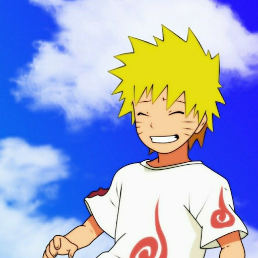
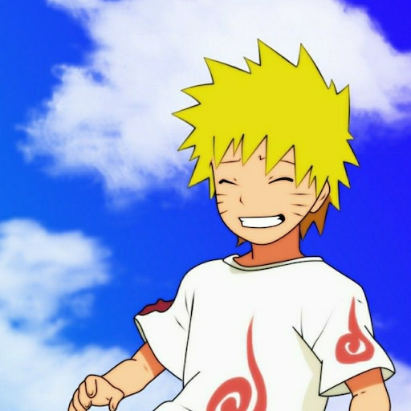

Naruto Uzumaki Tribute Page

Introduction
Naruto Uzumaki, the protagonist of the Naruto series, is a young ninja with a dream to become the strongest ninja and the leader of his village, the Hokage. Throughout the series, Naruto's journey is one of growth, perseverance, and friendship.
Character Description
Naruto is known for his determination and unwavering resolve. Despite facing numerous challenges and hardships, he never gives up on his dreams and continues to strive for greatness. His cheerful and optimistic nature inspires those around him, earning him the respect and admiration of his peers.
Memorable Moments
- Naruto's first encounter with Sasuke at the Academy.
- Naruto's battle against Pain to save the Hidden Leaf Village.
- Naruto's battle against Pain to save the Hidden Leaf Village.
Impact
Naruto has had a significant impact on anime and popular culture. The series has garnered a massive following worldwide and has inspired countless fans with its themes of friendship, perseverance, and redemption.
Quotes
- "I'm not gonna run away, I never go back on my word! That's my nindo: my ninja way!"
- "When people are protecting something truly special to them, they truly can become...as strong as they need to be!"

 
